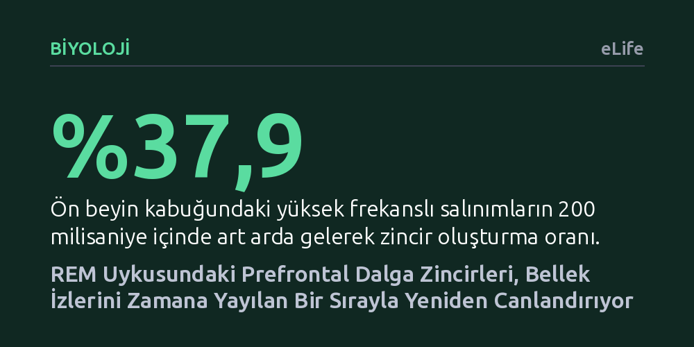

BIYOLOJI · eLife · 2026-09-09
Araştırmacılar, REM uykusunda ön beyin kabuğunda art arda beliren hızlı elektriksel dalgaların hipokampusla nasıl haberleştiğini ve bellek süreçlerini nasıl etkilediğini inceledi. Bu dalga zincirlerinin, NREM uykusundaki toplu patlamaların aksine, nöron topluluklarını arka planı baskılayarak düzenli bir zaman sırasıyla etkinleştirdiği bulundu.
Uykuda anıların yalnızca derin ve rüyasız evrede değil, REM uykusunda da kendine özgü sıralı ve seçici bir hücresel mekanizmayla pekiştirildiğini gösteriyor.

Gün içinde öğrendiğimiz bilgilerin ve yaşadığımız deneyimlerin kalıcı hafızaya aktarılması sürecinde uykunun belirleyici bir rolü olduğu uzun süredir bilinmektedir. Ancak geçmiş araştırmaların büyük bölümü, bu pekiştirme sürecini 'NREM' adı verilen derin ve rüyasız uyku evresine bağlamıştır. NREM uykusunda hipokampus ile beyin kabuğu arasında binlerce nöronun saniyeler içinde toplu halde patladığı eşzamanlı elektriksel dalgalar görülür. Buna karşılık, rüyaların görüldüğü REM uykusunun anıları nasıl işlediği ve iki beyin bölgesi arasında nasıl bir bilgi alışverişi kurduğu büyük ölçüde gizemini koruyordu.
Araştırmacılar bu belirsizliği aydınlatmak için REM uykusunda ön beyin kabuğunda (prefrontal korteks) ortaya çıkan yüksek frekanslı elektriksel salınımları mercek altına aldı. Temel amaç, bu salınımların derin uykudaki gibi kaba ve eşzamanlı bir patlama mı yarattığını, yoksa anıların içeriğini korumak için daha incelikli ve sıralı bir yöntem mi kullandığını tespit etmekti.
Deney ekibi, kemirgenlerin hem hipokampus (CA1 bölgesi) hem de prefrontal korteks bölgelerine mikroelektrotlar yerleştirdi. Hayvanlar uyanıkken bir mekânsal öğrenme görevini tamamlarken ve sonrasındaki uyku evrelerinde nöronların elektriksel sinyalleri kesintisiz olarak kaydedildi. Kaydedilen veriler NREM ve REM evrelerine göre ayrıştırılarak dalgaların teta ritmiyle olan ilişkisi ve nöronların birlikte ateşleme kalıpları matematiksel sınıflandırıcılarla çözümlendi.
Elde edilen hücresel verilerin biyolojik nedenlerini anlamak amacıyla 1600 uyarıcı piramidal nöron ve 400 ketleyici ara nörondan oluşan bir kortikal ağ simülasyonu kuruldu. Modelde, NREM evresindeki düşük asetilkolin konsantrasyonu ile REM evresindeki yüksek asetilkolin seviyesi nöronların potasyum kanalları üzerinden canlandırıldı. Böylece kimyasal ortamın ağ üzerindeki etkileri doğrudan test edildi.
Ölçümler, REM uykusundaki yüksek frekanslı salınımların yaklaşık üçte birinin tekil kalmadığını, 200 milisaniyeden daha kısa aralıklarla birbirini izleyen 'zincirler' halinde kümelendiğini ortaya koydu. Bu zincirler çoğunlukla ikili vuruşlar şeklinde gerçekleşiyor ve teta dalgalarıyla çok sıkı bir zamanlama bağı kuruyordu. Ayrıca bilgi akışının yönü incelendiğinde, sinyalin hipokampustan ön beyne doğru aktığı belirlendi.
En çarpıcı sonuç ise nöron topluluklarının ateşlenme biçiminde görüldü. NREM evresindeki dalgalar çevredeki nöronları hep birlikte ve güçlü bir biçimde uyarırken, REM dalga zincirleri tam aksine genel nöronal arka planı geçici olarak baskılıyordu. Bu sessizleşen zemin üzerinde, öğrenilen anıya ait nöron toplulukları aynı anda patlamak yerine zaman içine yayılan düzenli ve tekrarlanabilir bir sırayla tek tek etkinleşti.
İki beyin bölgesi arasındaki ortak çalışma incelendiğinde, hipokampustaki belirli bir nöron grubunun ön beyindeki dalga zincirleriyle doğrudan uyumlu çalıştığı saptandı. İlginç bir biçimde bu seçkin hücreler NREM uykusu sırasındaki kortikal dalgalarda susturulurken, REM evresindeki dalga zincirlerinde güçlü bir şekilde devreye giriyordu. Üstelik genel nöron popülasyonu uyku boyunca aşırı yüklenmeyi önlemek için ateşleme hızını düşürürken, bu özel grup uykunun sonuna doğru uyarılabilirliğini artırdı.
Bilgisayar modellemeleri de REM evresindeki yüksek asetilkolin seviyesinin ağın kontrolsüzce toplu patlamasını engellediğini doğruladı. Bu sonuçlar, NREM ve REM evrelerinin bellek sürecinde birbirine rakip olmadığını gösteriyor: NREM uykusu kaba anı izlerini belirleyip ayıklarken, REM uykusundaki dalga zincirleri seçilmiş anıların sıralı ve rafine bir biçimde pekiştirilmesini sağlıyor.